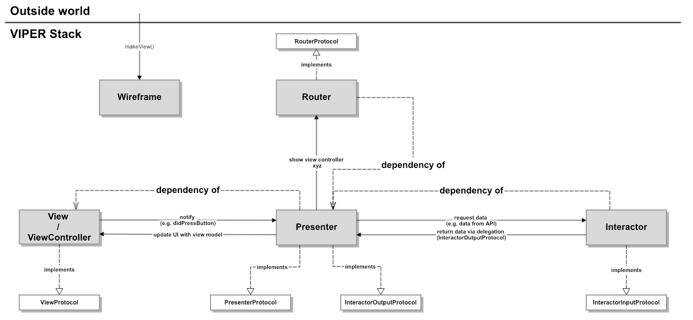

27. Jan 2019
designed by freepik.com
A long time ago our iOS team decided to try the VIPER Architecture pattern. There are a lot of variations of that pattern around. Over time, we have had a wide variety of use cases for which the classic VIPER Architecture (see below) doesn’t offer standardised solutions. That’s why we modified the Architecture pattern for our needs. Now I want to share our learnings and improvements.
For those of you who don’t know the VIPER Architecture pattern here is a simple example: Let’s say you want to show a list of items in your app. Normally you would only create a UIViewController including a UIView for that. Doing that the VIPER way means you create 5 components which all have its single responsibility.
In the following I will use VIPER stack as an alias for all the aforementioned components.
Take a look at the VIPER Architecture variation we started with.
VIPER Architecture we started with
A long time ago a new app project knocked at our door and we decided to follow this Architecture pattern for the first time. We needed some time to understand VIPER and this variation at all. After getting used to it we fall in love with VIPER.
We started with the following boilerplate code.
1. The code for a View (UIView or UIViewController):
protocol ViewProtocol: class {}
final class ViewController: UIViewController {
private var presenter: PresenterProtocol?
}
extension ViewController: ViewProtocol {}
2. The code for a Presenter:
protocol PresenterProtocol {}
final class Presenter: PresenterProtocol {
private weak var view: ViewProtocol?
private var interactor: InteractorInputProtocol?
private var router: RouterProtocol?
}
extension Presenter: InteractorOutputProtocol {}
3. The code for an Interactor:
protocol InteractorOutputProtocol: class {}
protocol InteractorInputProtocol {}
final class Interactor: InteractorInputProtocol {
private weak var presenter: InteractorOutputProtocol?
}
4. The code for a Router:
protocol RouterProtocol {}
final class Router: RouterProtocol {}
5. The code for a Wireframe:
enum WireframeError: Error {
case couldNotInstantiateInitialViewController
}
protocol WireframeProtocol {
static func makeView() throws -> ViewProtocol
}
final class Wireframe: WireframeProtocol {
static func makeView() throws -> ViewProtocol {
guard let view = UIStoryboard(named: "View", bundle: nil).instantiateInitialViewController() as? ViewProtocol else {
throw WireframeError.couldNotInstantiateInitialViewController
}
let presenter = Presenter()
let interactor = Interactor()
let router = Router()
view.presenter = presenter
presenter.view = view
presenter.interactor = interactor
presenter.router = router
interactor.presenter = presenter
return view
}
}
The app we created at that time had only a few views. For every view we created a VIPER stack.
Now we can move on to the 7 issues we experienced over the time following the VIPER Architecture pattern.
We wanted to integrate a UICollectionView in the app to show a list of items to the user. When you take a look at the above Architecture diagram it’s not obvious what’s the best way for setting up a UICollectionView with its delegate and data source.
We discussed it in the team and chose a solution. The Presenter as the Entity responsible for creating view models and telling the View to update itself should take care of it.
To do so the ViewProtocol should require a get only collection view property. That way the Presenter would be able to access the UICollectionView.
import UIKit
protocol ViewProtocol: class {
var collectionView: UICollectionView! { get }
}
final class ViewController: UIViewController {
private(set) weak var collectionView: UICollectionView!
}
extension ViewController: ViewProtocol {}
Then the Presenter creates the delegate and data source for the UICollectionView and sets it up using the collection view property of the View. In a first version the Presenter was the UICollectionViewDelegate and UICollectionViewDataSource.
Apart from this the Presenter created view models using data fetched from the Interactor. Over time that introduced another problem.
The Presenter file grew fast and had too many lines of code. We chose to reduce the responsibilities of the Presenter. We created separate reusable types for the UICollectionViewDelegate and UICollectionViewDataSource. Later on we met IGListKit and used that instead. In addition we outsourced the view model creation to a separate type which we call ViewModelCreator or ViewModelFactory.
More and more the delegation between the Interactor and the Presenter made no sense for most of our use cases. Mostly the Interactor starts async tasks. The Presenter should react to the completion of that task right where he called the Interactor method.
The VIPER variation we started with defines that the Presenter triggers an async task on the Interactor. At some point in the future the Interactor tells the Presenter that he finished this task. In the Presenter the logic which belongs together is scattered and hard to test, namely the call of the async Interactor method and the logic which should be executed in response (success or failure).
Thus we removed the InteractorOutputProtocol and renamed the InteractorInputProtocol to InteractorProtocol. Additionally we were able to remove the Presenter property from the Interactor (see example code below). If the called Interactor method is asynchronous we use PromiseKit to return a promise. That way the code for calling the async task and for responding to the result stays together.
As we created more and more VIPER stacks we brought the optional connections between some components into question. We unwrapped the Interactor and the Router in the Presenter over and over again. Then we decided that we don’t want a VIPER stack which has no Interactor or Router. Each VIPER stack should have all components to maintain uniformity when it comes to Architecture.
To make sure of that we first create the Interactor and the Router in the Wireframe and pass them to the initializer of the Presenter.
The code of the Presenter changes to:
protocol PresenterProtocol {}
final class Presenter: PresenterProtocol {
private weak var view: ViewProtocol?
private let interactor: InteractorProtocol
private let router: RouterProtocol
init(interactor: InteractorProtocol, router: RouterProtocol) {
self.interactor = interactor
self.router = router
}
}
The code of the Interactor changes to:
protocol InteractorProtocol {}
final class Interactor: InteractorProtocol {}
The makeView implementation in the Wireframe changes to:
static func makeView() throws -> ViewProtocol {
...
let interactor = Interactor()
let router = Router()
let presenter = Presenter(interactor: interactor, router: router)
presenter.view = view
view.presenter = presenter
return view
}
As time passed the Interactor did a lot of things. That’s why we decided to move some of the business logic into small, reusable and testable Services, which follow the Single Responsibility pattern. Now the Interactor handles less business logic, stays small and is easy to maintain.
Sometimes we want to update a VIPER stack from the outside world. Right now it’s hard because the makeView method of the Wireframe only returns an object conforming to the ViewProtocol. There are ways to do that but all of them are a bit dirty.
We concluded to enter the VIPER stack via the already exposed View. First we created a ModuleNameProtocol which defines the interfaces of the VIPER stack. The View implements that protocol and only delegates to the Presenter. The Presenter then does something, like requesting data from the Interactor, creating view models and updating the data source of a UICollectionView.
protocol <ModuleName>Protocol: class {}
protocol ViewProtocol: <ModuleName>Protocol {}
final class ViewController: UIViewController {}
extension ViewController: ViewProtocol {}
extension ViewController: <ModuleName>Protocol {}
From the outside we now have access to the properties and methods defined in the Protocol.
Sometimes we have nested VIPER stacks and want to update an underlying stack. We do that using the Router because hecreates the View of the underlying VIPER stack with the help of a Wireframe. The Router only needs to store a reference to that View and use it later on to update the underlying VIPER stack.
Occasionally we want to notify the outside world that something inside a specific VIPER stack happened. We had to decide which component should do that. Over time we more and more saw the Presenter as some kind of Man in the Middle. That’s why he gets an object conforming to ModuleNameDelegateProtocol and calls the delegate methods if needed.
protocol <ModuleName>DelegateProtocol: class {}
protocol PresenterProtocol {}
final class Presenter: PresenterProtocol {
private weak var view: ViewProtocol?
private let interactor: InteractorProtocol
private let router: RouterProtocol
private weak var delegate: <ModuleName>DelegateProtocol?
init(interactor: InteractorProtocol, router: RouterProtocol, delegate: <ModuleName>DelegateProtocol?) {
self.interactor = interactor
self.router = router
self.delegate = delegate
}
}
A simple real world example shows the need for communicating with the outside. Think about 2 views, one view showing a list of items and another view showing the details of one item.
We would create a VIPER stack for each view. If the user selects an item from the list we would use the Router to present the View for the item details. That’s easy. But if the user updates the item details we want to reflect these changes in the list after returning to it.
To do so we create a delegate protocol for the item details VIPER stack. The Presenter of the item list VIPER stackconforms to that protocol. We pass him to the makeView method of the Wireframe for the item details VIPER stack. The Wireframe then passes it to the Presenter which stores the reference and calls an appropriate method on the delegate after the details of an item have been updated.
protocol ItemDetailsDelegateProtocol: class {
didUpdateDetails(ofItem item: Item)
}
...
extension ItemListPresenter: ItemDetailsDelegateProtocol {
didUpdateDetails(ofItem item: Item) {
updateList()
}
}
...
final class ItemDetailsWireframe: ItemDetailsWireframeProtocol {
static func makeView(usingDelegate delegate: ItemDetailsDelegateProtocol?) throws -> ViewProtocol {
...
let presenter = Presenter(interactor: interactor, router: router, delegate: delegate)
...
return view
}
}
Finally we take a look at the Architecture Evolution.
VIPER Architecture Evolution
That’s the VIPER Architecture variation we developed over time.
We are very happy with it. The code we write following the pattern is easy to maintain and to test. It forces us to write independent modules and makes it easy to outsource them into separate projects. As always: Divide and conquer. To make the daily business easier we created a Xcode Template for our VIPERArchitecture variation.
We want to inject dependencies into the VIPER components. At the beginning we passed the dependencies of each component into their initializers. That led to huge initializers and was hard to maintain.
One of my colleagues had a great idea - to use only Swift Protocols and Structs. An easy to use and native dependency injection system was born. I’ll talk about that in a different story. Stay tuned :-)
Finally I would love to hear what you think about VIPER and especially about our Evolution. I know that VIPER is very controversial ;) And yes, we know about VIP but right now I’m not convinced.